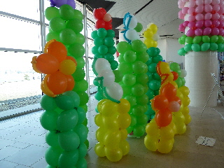
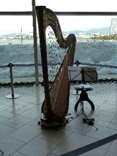
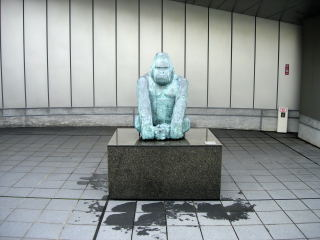
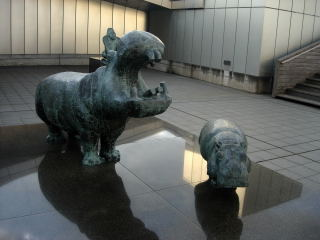
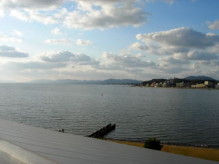
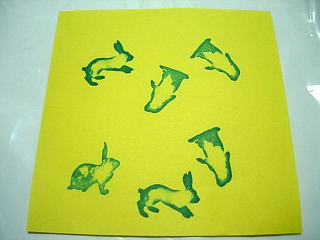

県立美術館 春の大感謝祭
2011/03/13
年に一度の無料開放デーに行ってきました。
お昼前に行ったので、ちょっと空いてて美術館の専用駐車場に車が止めれました。

バルーンが沢山飾ってあって、お祭りぽかったです。
企画展「安野光雅の絵本展」を見たんですが、展示品が多かったので、のんびり好きな絵が見れました。
椅子に座ってスライドを見たり、絵本を見てのんびり楽しい時間を過ごせました。
島根県松江市袖師町1-5
2011/03/13
年に一度の無料開放デーに行ってきました。
お昼前に行ったので、ちょっと空いてて美術館の専用駐車場に車が止めれました。

バルーンが沢山飾ってあって、お祭りぽかったです。
企画展「安野光雅の絵本展」を見たんですが、展示品が多かったので、のんびり好きな絵が見れました。
椅子に座ってスライドを見たり、絵本を見てのんびり楽しい時間を過ごせました。
2011/02/11
島根県立美術館のバレンタインコンサートを見に行きました。

X（イクサ）さんの「ヴァイオリンとハープ ～愛の贈り物」が聴くことが出来ました。
プロの演奏を近くで聞けてとっても良かったです。ステージ上じゃなくて、フラットな場所での近くなので見やすいし、聴きやすかったです。
松江まで見に行って良かったって思いました。
3/13には「春の大感謝祭2011」があるようです。
浜田真理子さんのコンサート他、いろいろあるようなので行けたら行きたいです。
2010/02/14
大量に作品があるので、見るのが大変です。
お客さんも多く一つ一つじっくり見れないので、線が綺麗で発色のいい作品を選んで鑑賞しました。
どちらかというと、黒が多い絵が好きかなと思って見ました。
広重の絵で、出雲や石見の絵があったんですね。いい雰囲気の絵でした。

バレンタインデーなのでデート中の人達が多かったです。うさぎは大人気で、入れ替わりで写真を撮られてました。でも屋上のゴリラ君は今日も暇そうでした。
2010/01/17
今日は美術館の駐車場に車が沢山停まっててビックリしました。
全島根小・中学校図画作品展と、島根県保育所（園）造形作品展があったので、そのお客さんが多かったみたいです。
企画展の浮世絵遊覧「前期・北斎特集」のお客さんも多く、のんびり美術鑑賞って気分にはなれなかったです。
普段のコレクション展でも見れる内容なので、発色の綺麗な絵だけ見ました。
2階は1階と違って、ちょっと空いてました。こっちはのんびり出来てよかったです。

屋上は誰もいなかったので、独り占め出来ました。

今日は天気が良かったので、見晴らしが良かったです
2009/08/09
夏の美術館はいいですね。空調がしっかりしてて快適な空間で、のんびり絵画を見るって贅沢ですね。しかも県立美術館は、特別展もいいですが、常設展の展示が多く、長い時間楽しめるがいいです。
橋本関雪展ですが、前半の中国画があまり興味がなかったんですが、後半の動物画はとても綺麗に感じました。ふんわりとした動物の体毛や、絵の焦点がいいなーって思いました。 ジメジメした休日にお勧めです。

県美で人気のうさぎのスタンプがあったので、押して帰りました。